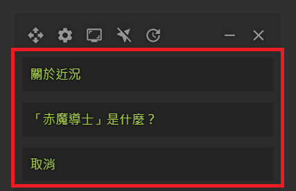

-
Open the [Re-translate & Custom Translation] Window
Click on the translated text in the Tataru Helper Node

-
Re-translate
- Select the [Translation Engine] and [Language]
- Click the [Re-translate] button
-
Add Custom Translation
- Enter the original text to be replaced in [Before Replacement (Original Text)]
- Enter the replacement text in [After Replacement (Custom Translation)]
- Click the [Category] menu to select the type of custom translation
- Click the [Save Custom Translation] button
-
Delete Custom Translation
- Enter the original text of the custom translation to be deleted in [Before Replacement (Original Text)]
- Click the [Category] menu to select the category of the custom translation
- Click the [Delete Custom Translation] button